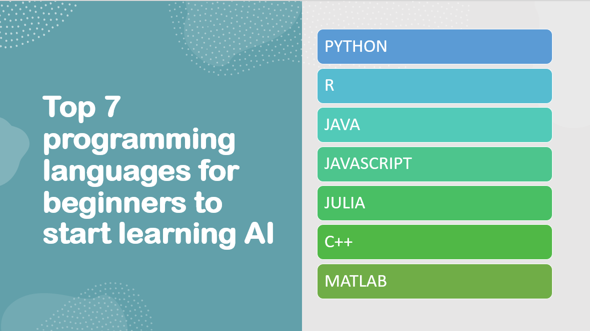

Introduction
Artificial Intelligence (AI) is revolutionizing industries across the globe, offering immense potential for innovation, efficiency, and problem-solving. AI refers to the development of intelligent machines that can perform tasks that typically require human intelligence, such as learning, reasoning, problem-solving, and decision-making.
The importance of AI lies in its ability to process vast amounts of data, identify patterns, and derive valuable insights to enhance decision-making processes.
AI-powered systems can automate repetitive tasks, streamline operations, optimize resource allocation, and improve overall productivity. Furthermore, AI has the potential to create entirely new products, services, and business models, transforming industries and driving economic growth.
Choosing the right programming language is crucial for beginners looking to learn AI effectively. The programming language you choose sets the foundation for your AI journey, influencing the ease of learning, the availability of resources and libraries, and the applicability to different AI tasks.
Here are some key considerations highlighting the significance of selecting the right programming language for AI beginners:
Learning Curve: - Beginners should opt for programming languages with a relatively gentle learning curve. Starting with languages like Python or R can be beneficial as they are beginner-friendly and have extensive support communities. These languages prioritize readability and simplicity, making it easier for beginners to grasp fundamental programming concepts.
Abundance of AI Libraries and Frameworks: The availability of libraries and frameworks greatly impacts AI development. Python, in particular, has a rich ecosystem of AI-focused libraries such as TensorFlow, PyTorch, and scikit-learn. These libraries provide pre-built functions and tools for tasks like machine learning, deep learning, and data manipulation, allowing beginners to leverage existing resources and accelerate their AI projects.
Flexibility and Versatility: An ideal programming language for AI beginners should offer flexibility and versatility to handle various AI tasks. Python, for instance, is a general-purpose language that can be used for a wide range of applications beyond AI. Its versatility enables beginners to explore different domains, experiment with diverse AI techniques, and transition seamlessly between AI and other programming projects.
Community Support and Learning Resources: The programming language you choose should have a vibrant and active community that provides ample learning resources, tutorials, and support forums. Python, with its large and welcoming community, offers extensive documentation, online courses, and forums where beginners can seek help, share knowledge, and engage with like-minded individuals.
Industry Adoption and Job Opportunities: Consideration should also be given to the industry adoption and job opportunities associated with the programming language. Python has gained significant popularity in the AI field and is widely used in both academia and industry. Learning Python for AI opens doors to a broad range of job opportunities and research avenues.
Visualization and Prototyping Capabilities: Visualization is a vital aspect of AI, allowing practitioners to gain insights from data and model outputs. Programming languages with strong visualization capabilities, such as Python with libraries like Matplotlib and Seaborn, enable beginners to analyze and present data effectively, aiding in the understanding and interpretation of AI results.
Top 7 programming languages
So, here is a list of top 7 programming languages for beginners to start learning AI:
Python is the first and top most programming languages for beginners to start learning AI.
CLICK HERE! and Begin your journey of learning Python with our interactive tutorial.
Overview and Importance
Python is widely regarded as the go-to language for AI due to its numerous advantages and features that make it an ideal choice for beginners and professionals alike.
Here are the reasons why Python is highly regarded in the AI community:
Beginner-Friendly
Python's syntax is simple and readable, making it easier for beginners to understand and write code. It emphasizes code readability and uses English-like expressions, reducing the learning curve for newcomers to programming and AI.
Rich Ecosystem
Python has a vast ecosystem of libraries and frameworks specifically designed for AI and data science. These libraries provide pre-built functions, algorithms, and tools, simplifying complex AI tasks and enabling developers to focus more on the application rather than low-level implementation.
Versatility
Python is a general-purpose programming language that can be used for various applications beyond AI. Its versatility allows developers to seamlessly integrate AI with other tasks, such as web development, data analysis, or automation, enhancing the overall functionality of their projects.
Python has a large and active community of developers, researchers, and enthusiasts who contribute to its growth. This community provides extensive documentation, tutorials, forums, and online courses, making it easier for beginners to find resources and seek help when needed.
Scalability
Python offers scalability, allowing developers to start with small-scale AI projects and gradually expand them to handle larger datasets and more complex models. Additionally, Python's scalability is enhanced by its ability to integrate with other high-performance languages such as C++ or CUDA for computationally intensive tasks.
Libraries and Frameworks
Python's popularity in AI is further supported by its powerful libraries and frameworks that simplify the development and deployment of AI models.
Some notable libraries and frameworks used in AI include:
Developed by Google, TensorFlow is an open-source library widely used for building and training machine learning and deep learning models. It offers a comprehensive ecosystem, including high-level APIs like Keras, for tasks like image recognition, natural language processing, and reinforcement learning.
Keras is a user-friendly, high-level neural networks API written in Python. It runs on top of TensorFlow and allows developers to quickly prototype and build deep learning models. Keras abstracts away the complexities of low-level implementation, enabling faster development and experimentation.
PyTorch is a popular deep learning framework known for its dynamic computational graph, which allows developers to define and modify models on-the-fly. It provides an intuitive interface and is favored by researchers for its flexibility, making it ideal for prototyping and experimentation.
Scikit-learn is a powerful machine learning library that provides a wide range of algorithms and tools for data preprocessing, model selection, and evaluation. It is known for its simplicity and ease of use, making it a go-to library for traditional machine learning tasks.
Industry Relevance
Python's widespread adoption in AI is evident across various industries:
Healthcare
Python is used in healthcare for medical imaging analysis, disease prediction, drug discovery, and genomics research. Its flexibility and rich library support enable the development of AI models that assist in diagnosing diseases, personalizing treatment plans, and analyzing large-scale genomic data.
Finance
Python is extensively used in the finance industry for tasks like algorithmic trading, risk analysis, fraud detection, and credit scoring. Its libraries, such as pandas for data manipulation and scikit-learn for machine learning, enable professionals to analyze vast financial datasets and build predictive models.
Robotics
Python is a popular choice for programming robots and autonomous systems. Libraries like OpenCV for computer vision, ROS (Robot Operating System) for robotic applications, and TensorFlow for deep learning contribute to the development of AI-driven robots and automation solutions.
In conclusion, Python's simplicity, extensive libraries and frameworks, versatility, and industry relevance have made it the go-to language for AI. It empowers beginners to learn and apply AI concepts effectively while providing the tools and support required for professionals to build advanced AI models in various domains.
R is a powerful programming language and environment specifically designed for data analysis, statistical computing, and graphics.
Overview and Importance
R may not be as widely known as Python in the AI community, it plays a significant role, particularly in data analysis and statistical modeling.
Here's why R is relevant in AI:
Data Analysis and Statistical Computing
R excels in data manipulation, exploration, and statistical analysis. It offers a wide range of built-in functions and packages for handling datasets, conducting hypothesis testing, regression analysis, time series analysis, and more. R's extensive statistical capabilities make it a preferred choice for researchers and analysts involved in AI projects that require robust data analysis.
Rich Collection of Packages
R has a vast collection of packages contributed by its active community, which extend its functionality for various purposes. Many of these packages are specifically designed for machine learning, predictive modeling, and data visualization, making R a valuable tool in AI-related tasks.
Data Analysis and Statistical Computing
R excels in data analysis and statistical computations, offering a wide range of built-in functions, packages, and algorithms for handling and manipulating data. It provides a comprehensive suite of statistical techniques, making it an excellent choice for tasks such as exploratory data analysis, hypothesis testing, regression analysis, and more.
Visualization Capabilities
R is renowned for its visualization libraries, such as ggplot2 and lattice, which enable users to create high-quality graphs, charts, and visualizations. These visualizations are vital for understanding data patterns, identifying outliers, and presenting insights, which are crucial steps in the AI pipeline.
Reproducibility and Collaboration
R's focus on reproducibility ensures that analyses can be easily replicated and shared. R scripts and notebooks document the entire data analysis process, including data manipulation, modeling, and visualization, facilitating collaboration and reproducibility, essential aspects in AI research and development.
Active and Supportive Community
R has a vibrant community of statisticians, data scientists, and researchers who contribute to its growth. The community actively develops and maintains numerous packages, provides support through forums, and shares best practices and resources, making it an excellent resource for beginners entering the AI field.
Statistical Packages and Libraries
R offers a rich ecosystem of packages that enhance its capabilities in AI and data analysis.
Some popular R packages used in AI include:
The caret (Classification And REgression Training) package provides a unified framework for training and evaluating machine learning models. It offers a consistent interface for various algorithms, simplifying the process of model building, hyperparameter tuning, and performance evaluation.
The randomForest package implements the random forest algorithm, which is a powerful ensemble learning method for classification and regression tasks. It creates multiple decision trees and combines their predictions to improve accuracy and handle complex data relationships.
The ggplot2 package is a versatile and elegant data visualization library. It follows the grammar of graphics, allowing users to create customized plots and visualizations with a high degree of flexibility. ggplot2 is widely used for exploratory data analysis and presenting results in a visually appealing manner.
These packages contribute to AI development by providing ready-to-use implementations of algorithms, efficient data manipulation and preprocessing functions, and visually appealing representations of data and models.
Industry Relevance
R finds extensive usage in industries that rely heavily on data analysis and statistical modeling:
Finance
R is widely used in finance for risk modeling, portfolio analysis, asset pricing, and quantitative trading strategies. Its statistical packages and libraries enable professionals to analyze market data, build complex models, and make data-driven investment decisions.
Healthcare
R is employed in healthcare for tasks such as clinical research, epidemiology, and healthcare analytics. It helps in analyzing patient data, conducting clinical trials, and developing predictive models to support medical decision-making and personalized treatment plans.
Marketing
R is utilized in marketing analytics to extract insights from customer data, perform segmentation, and build predictive models for customer behavior and campaign optimization. It aids in understanding consumer preferences, targeting the right audience, and measuring the effectiveness of marketing initiatives.
In summary, R's strength in data analysis, statistical computing, and visualization make it a valuable language for AI. Its packages, collaborative community, and industry relevance in domains like finance, healthcare, and marketing position R as a powerful tool for beginners entering the AI field and professionals in need of robust statistical and analytical capabilities.
Java, a widely adopted programming language known for its scalability and robustness, holds relevance in the AI field for several reasons.
Overview and Importance
Here are the benefits of Java for beginners entering the AI field:
Scalability
Java's scalability makes it suitable for handling large-scale AI systems and big data processing. Its ability to efficiently manage memory, handle multi-threading, and distribute computations across clusters makes it well-suited for building AI applications that require high performance and scalability.
Robustness and Reliability
Java's strong type-checking, exception handling, and runtime error detection contribute to the language's robustness. These features make Java a reliable choice for building complex AI systems, where errors need to be caught and handled gracefully, ensuring the stability and reliability of the application.
Familiar Syntax
Java's syntax is widely considered easy to read and comprehend, making it beginner-friendly. Its syntax shares similarities with other popular programming languages, enabling beginners to transfer their programming knowledge to the Java ecosystem with relative ease.
AI Libraries and Frameworks
Java offers libraries and frameworks that facilitate AI development.
Some popular ones include:
Deeplearning4j is a Java-based deep learning library. It provides tools and functionality to design and train deep neural networks, enabling developers to build and deploy production-grade AI models. DL4J is known for its compatibility with other Java libraries and frameworks, making it a popular choice for integrating deep learning into Java-based applications.
Weka is a comprehensive library for machine learning and data mining tasks. It offers a wide range of algorithms and tools for data preprocessing, classification, regression, clustering, and more. Weka's user-friendly interface and extensive documentation make it suitable for beginners to get started with machine learning in Java.
Industry Relevance
Java finds application in industries that require large-scale AI systems and high-performance computing:
E-commerce
Java is used in e-commerce for tasks such as personalized product recommendations, fraud detection, and customer segmentation. Its scalability and reliability enable the development of robust AI systems that handle vast amounts of data and deliver real-time personalized experiences to customers.
Telecommunications
Java is utilized in the telecommunications industry for various AI-driven applications, including network optimization, fraud detection, and customer churn prediction. Its ability to handle complex systems and process large volumes of data makes it valuable in building AI solutions for telecommunications providers.
In conclusion, Java's scalability, robustness, and relevance in industries requiring large-scale AI systems contribute to its significance in the AI field. Java's libraries and frameworks support AI development, making it a viable choice for beginners entering the AI domain. The demand for Java skills in AI-related roles offers potential career growth opportunities in various industries.
JavaScript, a versatile programming language primarily used for web development, also plays a significant role in AI, particularly for developing AI applications with web integration.
Overview and Importance
Here's why JavaScript is relevant in AI:
Web Integration
JavaScript's ability to seamlessly integrate with web technologies, such as HTML and CSS, allows for the development of AI applications that can run directly in web browsers. This enables the deployment of AI models on the client-side, leveraging the computational power of users' devices without relying on server-side processing.
Accessibility
JavaScript is a widely adopted language, supported by all major web browsers. This accessibility makes it convenient for developers to build and deploy AI applications that can reach a broad audience across different platforms and devices.
Front-End Development
JavaScript's strong presence in front-end web development makes it suitable for incorporating AI features into user interfaces. It enables the creation of interactive and engaging AI-driven components, enhancing user experiences and interactions with AI technologies.
JavaScript provides libraries and tools specifically designed for AI development.
Some popular ones include:
TensorFlow.js is a JavaScript library that brings the power of TensorFlow, a popular machine learning framework, to the browser environment. It enables developers to train and deploy machine learning models directly in the browser, leveraging the GPU capabilities of users' devices. TensorFlow.js supports both training and inference, making it suitable for a wide range of AI applications.
Brain.js is a JavaScript library for neural networks and deep learning. It provides a simple yet powerful API for building and training neural networks directly in the browser. Brain.js is well-suited for tasks like pattern recognition, classification, and regression, and can be integrated with web applications to provide AI capabilities on the client-side.
Industry Relevance
JavaScript finds application in industries that require interactive and web-based AI applications:
E-Learning
JavaScript is utilized in e-learning platforms to incorporate AI-driven features such as personalized recommendations, adaptive learning, and intelligent feedback. By combining JavaScript with AI capabilities, e-learning platforms can enhance the learning experiences of users and provide personalized learning pathways.
Customer Support
JavaScript powers chatbots and virtual assistants used for customer support on websites. By integrating AI algorithms, these AI-powered chatbots can understand user queries, provide relevant information, and simulate human-like interactions, improving customer satisfaction and support efficiency.
In summary, JavaScript's relevance in AI lies in its capability for web integration and front-end development, making it suitable for developing AI applications that run directly in web browsers. JavaScript libraries like TensorFlow.js and Brain.js further empower developers to incorporate AI functionalities into JavaScript-based projects. JavaScript's industry relevance is evident in industries requiring interactive and web-based AI
5: Julia
Julia is a programming language specifically designed for high-performance numerical computing and scientific computing.
Overview and Importance
It has been gaining popularity in the AI community for several reasons:
Julia is known for its exceptional performance, often comparable to or even surpassing that of languages like C and Fortran. Its just-in-time (JIT) compilation and multiple dispatch features allow Julia code to be compiled to efficient machine code, enabling fast execution of numerical computations.
Mathematical Focus
Julia has a strong focus on mathematical and scientific computing, making it well-suited for AI research and development. Its syntax and built-in mathematical functions make it expressive and efficient in handling complex mathematical operations, such as linear algebra and optimization.
Interoperability
Julia can seamlessly interface with other languages like Python, R, and C, allowing users to leverage existing libraries and frameworks. This interoperability simplifies integration with existing AI ecosystems and enables the use of specialized libraries for tasks like data manipulation, visualization, and machine learning.
AI Packages and Frameworks
Julia offers several powerful packages and frameworks for AI development:
Flux.jl is a popular deep learning framework in Julia. It provides a comprehensive set of tools for building, training, and deploying deep neural networks. Flux.jl's simplicity and flexibility make it suitable for both beginners and advanced users, offering a seamless experience for prototyping and deploying AI models.
MLJ.jl is a machine learning framework that offers a unified interface for working with various machine learning algorithms and models. It provides a consistent API for data preprocessing, model training, and evaluation. MLJ.jl simplifies the machine learning workflow, making it easier for beginners to experiment and develop AI models.
Industry Relevance
Julia finds application in industries that require high-performance numerical computing, such as scientific research and engineering:
Scientific Research
Julia is used in scientific research for tasks such as data analysis, simulation, and optimization. Its performance and mathematical capabilities allow researchers to analyze large datasets, perform complex simulations, and solve mathematical models efficiently.
Engineering
Julia is utilized in engineering fields for tasks such as optimization, control systems, and signal processing. Its ability to handle complex mathematical operations and deliver high-performance computations makes it valuable in engineering simulations, design optimization, and real-time control systems.
In conclusion, Julia's performance, mathematical focus, ease of use, and availability of powerful AI packages make it increasingly popular in the AI community. It provides a platform for beginners interested in AI research and development to leverage its performance and mathematical capabilities. The demand for Julia skills in AI-related roles presents career opportunities in industries that require high-performance numerical computing and scientific research.
C++ is a powerful programming language known for its efficiency and performance, making it relevant in the field of AI.
Overview and Importance
Here's why C++ is important:
C++ allows developers to write code that executes with high efficiency and low overhead. It offers fine-grained control over memory management and low-level system interactions, enabling developers to optimize AI algorithms and achieve better performance. This efficiency is crucial for handling large datasets and computationally intensive AI tasks.
Building Robust AI Systems
C++ provides features like strong typing, static typing, and manual memory management, making it suitable for building robust and reliable AI systems. These features enable developers to write code that is less error-prone, easier to maintain, and performs well under demanding conditions.
AI Libraries and Integration
C++ integrates seamlessly with popular AI libraries and frameworks through their C++ APIs, allowing developers to leverage existing AI codebases and tools.
Here are a few examples:
OpenCV is a widely-used library for computer vision tasks. It has a C++ API, providing a comprehensive set of functions and algorithms for image and video processing, object detection, and feature extraction. C++ integration with OpenCV enables efficient implementation of computer vision algorithms in AI applications.
Caffe is a deep learning framework with a C++ API that supports training and deploying deep neural networks. Its C++ integration allows developers to work with pre-trained models, perform inference, and build custom neural network architectures for various AI tasks.
Industry Relevance
C++ finds application in industries that require high-performance AI systems, particularly in domains like autonomous vehicles and computer vision:
Autonomous Vehicles
C++ is extensively used in the development of autonomous vehicles for tasks like perception, sensor fusion, and control systems. Its efficiency and low-level control enable real-time processing of sensor data, making C++ crucial for building reliable and efficient AI systems in the automotive industry.
Computer Vision
C++ plays a vital role in computer vision applications such as object recognition, image segmentation, and augmented reality. Its high performance and efficient memory management enable real-time processing of visual data, making it valuable in industries like robotics, surveillance, and medical imaging.
In summary, C++'s efficiency, performance, and suitability for building robust AI systems make it relevant in the field of AI. It provides benefits for beginners interested in AI optimization and developing reliable AI systems. C++ integration with popular AI libraries and frameworks enables seamless integration with existing codebases. The demand for C++ skills in AI-related roles presents career opportunities in industries requiring high-performance AI systems.
MATLAB is a high-level programming language and environment widely used in scientific and engineering fields, including AI.
Overview and Importance
Its relevance in AI is primarily attributed to its strengths in numerical computing and algorithm development. Here's why MATLAB is important:
Numerical Computing
MATLAB excels in handling numerical computations, making it suitable for AI tasks involving data manipulation, analysis, and simulation. Its extensive library of built-in functions and toolboxes enables efficient handling of large datasets and complex mathematical operations.
Algorithm Development
MATLAB provides a user-friendly environment for developing and prototyping AI algorithms. Its intuitive syntax, interactive tools, and visualization capabilities facilitate the development and experimentation of AI models, making it accessible for beginners.
MATLAB offers various toolboxes that are specifically designed for AI-related tasks.
Here are a few popular ones:
This toolbox provides a comprehensive set of algorithms and functions for machine learning tasks, including classification, regression, clustering, and dimensionality reduction. It enables beginners to explore and implement a wide range of AI models and techniques.
The Computer Vision Toolbox offers functions and algorithms for image and video processing, object detection and recognition, and feature extraction. It provides a rich set of tools for developing computer vision applications, making it valuable in AI projects involving image and video analysis.
Industry Relevance
MATLAB finds application in industries that require advanced AI techniques, particularly in areas like image processing and predictive modeling:
Image Processing
MATLAB is extensively used in industries that rely on image processing, such as healthcare, surveillance, and autonomous systems. Its image processing toolbox and computer vision capabilities enable tasks like image enhancement, segmentation, and object detection, making it valuable for AI applications in these industries.
Predictive Modeling
MATLAB's machine learning and statistical analysis capabilities make it valuable in industries that require predictive modeling, such as finance, marketing, and manufacturing. Its toolboxes and functions facilitate tasks like data preprocessing, model training, and performance evaluation, enabling the development of accurate and robust predictive models.
In conclusion, MATLAB's strengths in numerical computing, algorithm development, and its AI-specific toolboxes make it relevant in the field of AI. It provides advantages for beginners entering the AI field, offering a user-friendly environment and a wide range of AI functions and algorithms to explore. The demand for MATLAB skills in AI-related roles presents career opportunities in industries that require advanced AI techniques and data analysis.
Conclusion
Here's a recap of the top seven programming languages for beginners to start learning AI:
Python: Widely regarded as the go-to language for AI, Python offers simplicity, versatility, and extensive library support.
R: R is ideal for statistical computing and data analysis, making it valuable for AI research and applications.
Java: Java's scalability, robustness, and industry relevance make it suitable for building AI systems, particularly in enterprise and Android development.
JavaScript: JavaScript is essential for developing AI applications with web integration, making it valuable for web-based AI projects and interactive user experiences.
Julia: Julia's performance and mathematical focus make it popular in the AI community, especially for scientific computing and AI research.
C++: C++ offers efficiency, performance, and low-level control, making it valuable for optimizing AI algorithms and building high-performance AI systems.
MATLAB: MATLAB's strengths in numerical computing and algorithm development make it relevant for AI tasks, particularly in scientific and engineering domains.
When choosing a programming language for AI, it's important to consider individual interests, career goals, and industry relevance. Each language has its strengths and applications in different domains. Consider the specific needs of the AI projects you're interested in and the industries you wish to work in.
To get started, leverage the abundant resources available for each language, including tutorials, documentation, online courses, and AI communities. Dive into the exciting world of AI, experiment with projects, and continuously expand your knowledge and skills.
Remember, the field of AI is rapidly evolving, and learning multiple languages can be beneficial as it broadens your perspectives and opens up opportunities to explore diverse AI applications. So, embrace the journey, stay curious, and enjoy the process of learning and applying AI in your chosen programming language. With dedication and continuous learning, you can embark on a rewarding career in the exciting field of AI.